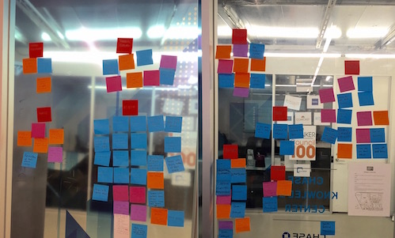

Pulseband
Developing a heart-focused wearable technology
To simulate a start-to-finish product development cycle, we at DESIGNATION developed a mock product, the Pulseband. The Pulseband is a wearable technology that measures users’ blood pressure, heart rate, steps, sleep patterns among other vitals. The purpose of this project was to define the scope of the the Pulseband’s capabilities and develop a mobile app alongside those functionalities. Over the course of the project, we implemented various product development methodologies such as the Google 5-Day Sprint.
As leader of the UX effort, I conducted a robust discovery phase to gain industry insight, understand product line potential, and identify key areas of focus for user research. I interviewed potential users of the Pulseband and subject matter experts (SMEs) in the medical and cardiac-related fields. I synthesized my findings by producing deliverables that could be used by other members of my team. On the IxD side, I helped developed wireframes and prototypes, conduct user testing, and iterate on our designs based on user feedback.
Discovery
Let's learn some stuff.
-
Research
-
Interviews
-
Competitive Analysis
-
Synthesize

With such a medically focused product, Step 1 was familiarizing myself with the vocabulary and landscape of heart disease, cardiac biometrics, and heart-monitoring devices. What biometrics need to be consistently monitored for those with cardiac disease? Which numbers are predictors of an imminent emergency? Do those metrics fall within the scope of the Pulseband’s technological capabilities?
Next, I interviewed subject matter experts and potential users to hear both sides of the story. To the medical experts: What are the challenges you face treating heart disease patients? And to those with heart disease: What are your frustrations with the current heart-monitoring/heart-health solutions?
Competitive analysis spread across a range of industries, technologies, and brand types. Fuelband, Holter, AliveCor, Jawbone, etc. - What metrics are each of the competitors tracking? Where is there opportunity for Pulseband to differentiate itself? How does that shift who the target consumer is for Pulseband? And how do we build a product accordingly?
With this research gathered, the next step was to synthesize. Sketch, draw, storyboard, information architecture, application maps - how do we present all we’ve learned in the best way possible for product development....
Personas
These user personas are realistic representations of key audience segments for your the Pulseband. The goal of these personas was not to represent every possible audience member but rather to address the major needs of the most important user groups. Through the synthesis of my research, I found that these characters (with these goals and stories) most accurately depict those who are potential Pulseband users.
Ideate/Design/Iterate
Time to play with it?
Life Coach
From our research, we found that any increase in physical activity will result in improved heart health. We let this finding dictate much of our beginning ideation, fueling ideas that would inspire exercise and prompt concern for health. Pictured above is the web app wireframe I created for our original idea — a life coach/trainer in which users would log in on desktop, customize cards from an all-encompassing list of categories, and then receive notifications/reminders on their smartphones and Pulseband at the appropriate, specified times.
After user testing, it became clear that this idea was too robust. While users appreciate the ability to customize everything from medicine reminders to exercise encouragement, they were overwhelmed by the immensity of such a platform.
Low-Fi Wireframes

At that point, we as a group decided to pivot to a goal center model, in which users would automatically be opted into challenges and not have to worry about choosing and customizing each component to their liking.
Pictured above are sketches of wireframes I produced. Pictured below is an application map that outlines the application direction. From here, the wireframes were handed off to my IxD and UI teammates.
Application Map
Scenarios
How would the application function in real life?
As part of the UX process, I drafted specific scenarios that illustrate times in which the Pulseband could be used. The video below details two scenarios, and all of the screens/interactions a user would experience.
I created this video using Keynote's animation effects.
More Screens